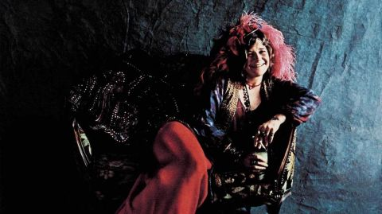
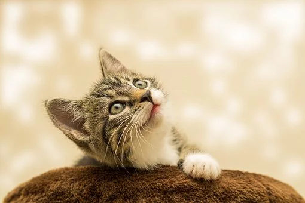

Janis Joplin
That voice – high, husky, earthy, explosive – remains among the most distinctive and galvanizing in pop history. But Janis Joplin didn’t merely possess a great instrument; she threw herself into every syllable, testifying from the very core of her being.


Janis Joplin "Pearl" Album cover Photo on Couch
A few of her Albums:
- 1967: Big Brother and the Holding Company
- 1968: Cheap Thrills
- 1969: I Got Dem Ol' Kozmic Blues Again Mama!
- 1971: Pearl
- 1972: In Concert
- 1973: Janis Joplin's Greatest Hits
- 1975: Janis
- 1976: Anthology
- 1982: Farewell Song
- 2000: Super Hits
- 2009: The Woodstock Experience
- 1998: Live at Winterland '68
- 2012: Live at the Carousel Ballroom 1968